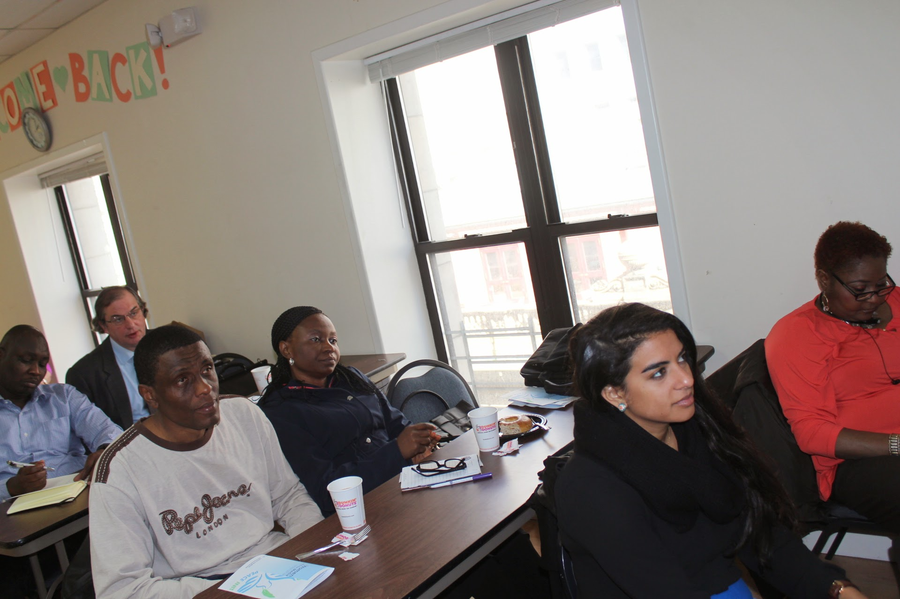

Programs
We support media literacy, fact-checking, and journalism education to counter misinformation and strengthen responsible media practices.
Media literacy trainingInteractive courses, workshops, and tools for recognizing disinformation.→
Cross-border collaborationConnecting journalists, educators, and students across cultures.→
Policy and advocacyResearch and public engagement for stronger media systems.→
Research and innovationStudies, digital tools, and new approaches to media education.→
Journalism developmentWorkshops, fellowships, and support for ethical local reporting.→
A trusted organization driving media development.
Our initiatives give people the tools to navigate today’s complex media landscape with confidence.

Be part of the change
Empower media literacy. Defend press freedom. Support ethical journalism — as a volunteer, donor, or advocate.